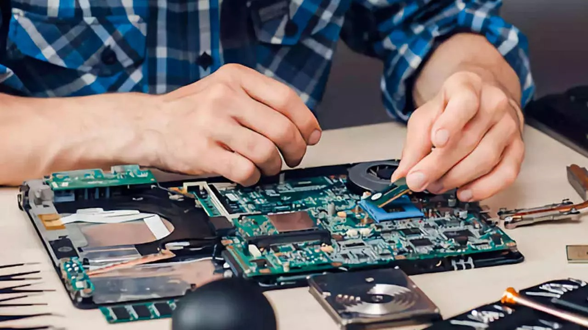

Nuestros servicios van más allá de simplemente solucionar problemas. Ofrecemos contratos de mantenimiento personalizados para adaptarnos a las necesidades específicas de tu empresa o hogar. Desde la limpieza de virus y malware hasta la optimización del sistema y la recuperación de datos, nos aseguramos de que tus computadoras estén siempre en óptimas condiciones de funcionamiento. Además, utilizamos solo piezas y software de alta calidad para garantizar resultados duraderos y confiables.
Reparación de Hardware: Desde cambios de componentes hasta soluciones de fallas complejas.
Limpieza de Virus: Eliminación de malware y optimización de rendimiento.

Mantenimiento Preventivo: Revisiones periódicas para evitar problemas futuros.
